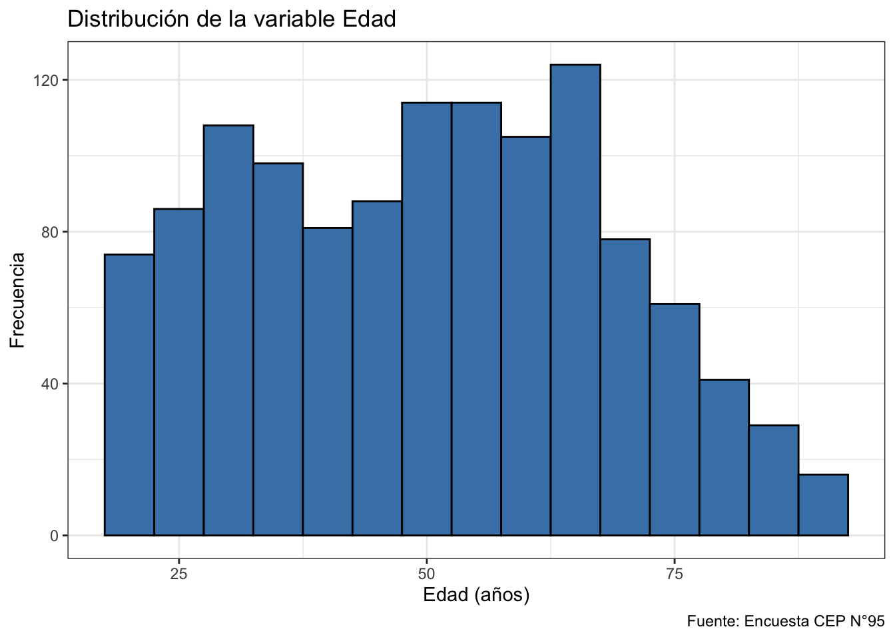

library(dplyr) # manipulación de datos
library(ggplot2) # gráficos
library(readr) # importar datos
library(here) # rutas relativas
library(car) # recodificación de variables
theme_set(theme_bw())
options(scipen = 999)1 Presentación
Esta guía integra todos los contenidos vistos en los talleres en un solo flujo de análisis, tal como lo haría un/a analista con datos reales. A diferencia de los talleres anteriores, aquí los ejercicios no están separados por contenido: cada etapa del análisis pone en práctica una herramienta distinta, y los resultados de una etapa alimentan la siguiente.
El encargo: Un centro de estudios les solicita un informe breve sobre las actitudes políticas de la población chilena usando la Encuesta CEP N°95. El informe debe (1) describir la muestra, (2) caracterizar la posición ideológica y el interés político de los/as encuestados/as, (3) estimar con intervalos de confianza la aprobación del gobierno y la posición ideológica promedio de la población, y (4) poner a prueba algunas hipótesis.
1.1 Mapa de contenidos
| Etapa del análisis | Contenido evaluado | Taller |
|---|---|---|
| Preparar y limpiar los datos | Importar, explorar, recodificar, casos perdidos | I y IV |
| Describir la muestra | Tablas de frecuencia, descriptivos, gráficos | II |
| Ubicar casos en una distribución | Puntaje Z y distribución normal | III |
| Estimar parámetros poblacionales | IC para medias y proporciones | III y IV |
| Poner a prueba hipótesis | Test t para una media, valor-p | IV |
| Concluir | Interpretación sustantiva de todo lo anterior | Todos |
Tip
Cómo usar esta guía: intenten resolver cada chunk antes de mirar los códigos de los talleres anteriores. En la prueba no basta con ejecutar código: cada resultado debe ir acompañado de una interpretación sustantiva (¿qué nos dice este número sobre la población chilena?).
2 Preparación de los datos
2.1 Cargar paquetes y datos
cep <- read.csv(file = here("bases", "raw", "cep95.csv"),
sep = ",",
encoding = "UTF-8",
stringsAsFactors = FALSE)
# Exploración inicial
dim(cep)[1] 1217 176Pregunta 1.1: ¿Cuántos casos y cuántas variables tiene la base? ¿Qué representa cada fila?
2.2 Limpieza: casos perdidos y recodificaciones
Trabajaremos con cinco variables. Antes de cualquier cálculo, debemos revisarlas y limpiar los códigos de casos perdidos (-8 = “No sabe”, -9 = “No contesta”).
| Variable | Contenido | Tipo |
|---|---|---|
edad |
Edad en años | Continua |
sexo |
1 = Hombre, 2 = Mujer | Dicotómica |
zona_u_r |
1 = Urbano, 2 = Rural | Dicotómica |
iden_pol_2 |
Escala ideológica (1 = izquierda, 10 = derecha) | Continua (escala) |
eval_gob_1 |
Evaluación del gobierno (1 = Aprueba) | Categórica |
# EJEMPLO RESUELTO: limpiamos la escala ideológica
table(cep$iden_pol_2)
-9 -8 1 2 3 4 5 6 7 8 9 10
107 158 94 23 49 61 358 77 83 46 27 134 cep$ideologia <- car::recode(cep$iden_pol_2, "-8=NA; -9=NA")
table(cep$ideologia)
1 2 3 4 5 6 7 8 9 10
94 23 49 61 358 77 83 46 27 134 Ahora completen ustedes las demás recodificaciones:
# Revise SIEMPRE la variable original antes de recodificar
table(cep$sexo)
1 2
506 711 table(cep$zona_u_r)
1 2
1057 160 table(cep$eval_gob_1)
-9 -8 1 2 3
15 34 344 741 83 # a) Dummy mujer (1 = Mujer, 0 = Hombre)
# cep$mujer <- as.numeric(car::recode(as.character(cep$sexo),
# "'2'=1; '1'=0"))
# b) Dummy urbano (1 = Urbano, 0 = Rural)
# cep$zona_num <- as.numeric(car::recode(as.character(cep$zona_u_r),
# "'___'=1; '___'=0"))
# c) Dummy aprobación del gobierno (1 = Aprueba, 0 = otra respuesta válida,
# NA = no sabe / no contesta)
# cep$aprueba <- car::recode(cep$eval_gob_1, "-8=NA; -9=NA; 1=1; else=0")
# Verifique cada recodificación con table()Pregunta 1.2: ¿Por qué es un error grave calcular la media de
iden_pol_2sin recodificar antes los valores -8 y -9? ¿En qué dirección sesgarían el resultado?
Pregunta 1.3: ¿Por qué recodificamos las variables dicotómicas como 0/1? ¿Qué representa la media de una variable así recodificada?
3 Describir la muestra
Todo informe parte describiendo quiénes componen la muestra. Aquí aplicamos los descriptivos del Taller II.
3.1 Variables categóricas: tabla de frecuencias
# EJEMPLO RESUELTO: tabla de frecuencias para zona
data_zona <- select(cep, zona_u_r) %>% na.omit()
tabla_zona <- data_zona %>%
group_by(zona_u_r) %>%
summarise(Frec_abs = n()) %>%
mutate(
Frec_porc = prop.table(Frec_abs) * 100,
Frec_acum_porc = cumsum(Frec_porc)
)
tabla_zona# A tibble: 2 × 4
zona_u_r Frec_abs Frec_porc Frec_acum_porc
<int> <int> <dbl> <dbl>
1 1 1057 86.9 86.9
2 2 160 13.1 100 # EJERCICIO: construya la tabla de frecuencias para sexo
# data_sexo <- select(cep, ___) %>% na.omit()
#
# tabla_sexo <- data_sexo %>%
# group_by(___) %>%
# summarise(Frec_abs = n()) %>%
# mutate(Frec_porc = prop.table(Frec_abs) * 100)
#
# tabla_sexo3.2 Variable continua: descriptivos de edad
# EJERCICIO: complete los descriptivos de edad
mean(cep$edad, na.rm = TRUE)[1] 50.06984# median(cep$edad, na.rm = TRUE)
# sd(cep$edad, na.rm = TRUE)
# min(cep$edad, na.rm = TRUE)
# max(cep$edad, na.rm = TRUE)
# quantile(cep$edad, prob = c(0.25, 0.5, 0.75), na.rm = TRUE)Pregunta 2.1: Compare la media con la mediana de edad. ¿Qué nos dice esa comparación sobre la simetría de la distribución?
3.3 Gráficos
# EJEMPLO RESUELTO: histograma de edad
g1 <- ggplot(cep, aes(x = edad)) +
geom_histogram(binwidth = 5, color = "black", fill = "steelblue") +
labs(
y = "Frecuencia",
x = "Edad (años)",
title = "Distribución de la variable Edad",
caption = "Fuente: Encuesta CEP N°95"
)
g1
# EJERCICIO: construya un gráfico de barras con PORCENTAJES para la variable
# ideologia (limpia), y un boxplot de edad según zona_u_r.
# Pistas: geom_bar() con after_stat(count), y geom_boxplot() con as.factor()
# g2 <- ggplot(cep %>% filter(!is.na(ideologia)), aes(x = as.factor(ideologia))) +
# geom_bar(aes(y = (after_stat(count)) / sum(after_stat(count)) * 100),
# color = "black", fill = "steelblue") +
# labs(y = "Porcentaje", x = "___", title = "___",
# caption = "Fuente: Encuesta CEP N°95")
# g2
# g3 <- ggplot(cep %>% filter(!is.na(zona_u_r), !is.na(edad)),
# aes(x = as.factor(zona_u_r), y = edad, fill = as.factor(zona_u_r))) +
# geom_boxplot(outlier.color = "red", alpha = 0.7) +
# labs(x = "Zona (1 = Urbano, 2 = Rural)", y = "Edad (años)",
# title = "___", caption = "Fuente: Encuesta CEP N°95") +
# theme(legend.position = "none")
# g3Pregunta 2.2: Observando el gráfico de barras de ideología, ¿dónde se concentran los/as encuestados/as? ¿La distribución es simétrica?
Pregunta 2.3: Redacte 3-4 líneas describiendo la muestra (n, composición por sexo y zona, edad promedio). Este párrafo será la sección “Datos” de su informe.
4 Puntaje Z — ubicar casos en la distribución
Ya sabemos que la edad tiene una distribución con cierta media y desviación estándar. El puntaje Z nos permite responder preguntas sobre casos individuales dentro de esa distribución, asumiendo normalidad:
\[z = \frac{x - \bar{x}}{s}\]
4.1 Ejercicio 3.1
Asumiendo que la edad se distribuye de forma normal con la media y desviación estándar que calculó anteriormente:
- ¿Qué puntaje z corresponde a una persona de 30 años? Interprete: ¿está por encima o por debajo de la media, y a cuántas desviaciones estándar?
- ¿Qué porcentaje de la población tendría 65 años o más?
- ¿Desde qué edad hacia arriba se encuentra el 10% más viejo de la población?
media_edad <- mean(cep$edad, na.rm = TRUE)
sd_edad <- sd(cep$edad, na.rm = TRUE)
# a) Puntaje z para 30 años
# z_30 <- (___ - media_edad) / sd_edad
# z_30
# b) Porcentaje con 65 años o más (cola superior)
# z_65 <- (65 - media_edad) / sd_edad
# 1 - pnorm(z_65)
# c) Edad que deja al 10% en la cola superior
# qnorm(0.90, mean = media_edad, sd = sd_edad)4.2 Ejercicio 3.2 (pensamiento crítico)
Compare el resultado de (b) con la proporción empírica de personas de 65 años o más en la muestra:
# Proporción observada en los datos
# mean(cep$edad >= 65, na.rm = TRUE)Pregunta 3.1: ¿Coinciden la estimación basada en la normal y la proporción empírica? Si difieren, ¿qué supuesto del puntaje Z podría no cumplirse en esta variable? (Pista: mire de nuevo el histograma que realizó anteriormente).
5 Intervalos de confianza — estimar parámetros
Hasta aquí hemos descrito la muestra. Pero el informe debe hablar de la población chilena. Para eso construimos intervalos de confianza alrededor de nuestros estimadores puntuales.
5.1 IC para una media: posición ideológica
\[IC = \bar{x} \pm t_{\alpha/2} \cdot \frac{s}{\sqrt{n}}\]
5.1.1 Ejercicio 4.1
Calcule a mano (paso a paso) el intervalo de confianza al 95% para la media de ideologia: estimador puntual, n sin perdidos, error estándar, margen de error y límites. Luego verifique con t.test().
# Paso a paso
# media_ideo <- mean(cep$ideologia, na.rm = TRUE)
# sd_ideo <- sd(cep$ideologia, na.rm = TRUE)
# n_ideo <- sum(!is.na(cep$ideologia))
#
# se_ideo <- ___ / sqrt(___)
# me_ideo <- 1.96 * ___
#
# media_ideo - me_ideo
# media_ideo + me_ideo
# Verificación automática
# t.test(cep$ideologia, conf.level = 0.95)5.1.2 Ejercicio 4.2
Repita el cálculo al 99% de confianza (recuerde: \(t_{\alpha/2} = 2.58\)).
# t.test(cep$ideologia, conf.level = 0.99)Pregunta 4.1: Interprete el intervalo al 95% en una frase completa (¿qué podemos afirmar sobre la posición ideológica promedio de la población?).
Pregunta 4.2: ¿Cuál de los dos intervalos es más amplio y por qué? ¿Qué tendría que ocurrir para obtener un intervalo más angosto sin bajar el nivel de confianza?
5.2 IC para una proporción: aprobación del gobierno
\[IC = \hat{p} \pm t_{\alpha/2} \cdot \sqrt{\frac{\hat{p}(1-\hat{p})}{n}}\]
5.2.1 Ejercicio 4.3
Usando la dummy aprueba que creó anteriormente:
- Reporte el estimador puntual (proporción que aprueba al gobierno)
- Calcule a mano el error estándar y el IC al 95%
- Verifique con
binom.test()
# a) Estimador puntual
# p_aprueba <- mean(cep$aprueba, na.rm = TRUE)
# p_aprueba
# b) A mano
# n_aprueba <- sum(!is.na(cep$aprueba))
# se_aprueba <- sqrt((p_aprueba * (1 - p_aprueba)) / n_aprueba)
#
# p_aprueba - 1.96 * se_aprueba
# p_aprueba + 1.96 * se_aprueba
# c) Verificación
# x <- sum(cep$aprueba == 1, na.rm = TRUE)
# binom.test(x = x, n = n_aprueba, conf.level = 0.95)Pregunta 4.3: Las fichas técnicas de las encuestas (como la que vimos en clases) reportan un “margen de error” (por ejemplo, ±2.8%). ¿Con cuál de los valores que acaba de calcular se corresponde ese concepto? ¿Su margen de error es similar?
Pregunta 4.4: Redacte la interpretación como aparecería en un titular de prensa responsable: “Entre un % y un % de la población aprueba al gobierno, con un 95% de confianza”.
6 Tests de hipótesis
El centro de estudios plantea dos hipótesis que debemos evaluar formalmente.
6.1 Hipótesis A: “La población chilena es ideológicamente de centro”
Si la población fuera “de centro”, su promedio en la escala 1-10 sería el punto medio: 5.5.
6.1.1 Ejercicio 5.1
- Escriba \(H_0\) y \(H_a\)
- Calcule a mano el estadístico t y el valor-p con
pt() - Verifique con
t.test() - Decida (con \(\alpha\) = 0.05) y redacte una conclusión sustantiva
# H0: mu = ___
# Ha: mu != ___
# t_ideo <- (media_ideo - ___) / se_ideo
# t_ideo
#
# 2 * pt(abs(t_ideo), df = n_ideo - 1, lower.tail = FALSE)
# Verificación
# t.test(cep$ideologia, mu = 5.5)Pregunta 5.1: ¿El valor 5.5 está dentro o fuera del intervalo de confianza al 95% que calculó en el Ejercicio 4.1? ¿Es coherente con la decisión del test? Explique la relación entre ambas herramientas.
6.2 Hipótesis B: “La edad promedio de la población es de 52 años”
6.2.1 Ejercicio 5.2
Ponga a prueba esta hipótesis con t.test() y concluya.
# t.test(cep$edad, mu = ___)Pregunta 5.2: Compare este resultado con el de la Hipótesis A: ¿en cuál caso la evidencia contra \(H_0\) es más contundente? ¿Qué papel juega el valor-p en esa comparación?
Importante
Cuidado con la redacción: cuando el valor-p es mayor a \(\alpha\), NO decimos que “aceptamos” o “probamos” \(H_0\). Decimos que no tenemos evidencia suficiente para rechazarla. En la prueba se evaluará la precisión de este lenguaje.
7 Conclusiones del informe
7.1 Ejercicio final (integrador)
Redacte un párrafo de conclusiones (8-12 líneas) que integre los principales hallazgos del análisis, como cerraría un informe real. Debe incluir, con sus respectivos respaldos estadísticos:
- Una caracterización breve de la muestra
- La estimación por intervalo de la posición ideológica de la población
- La estimación por intervalo de la aprobación del gobierno, mencionando el margen de error
- El resultado de al menos un test de hipótesis, con su conclusión sustantiva
Criterio de calidad: un buen párrafo no dice “el valor-p fue 0.03”, sino “la evidencia permite descartar que la población se ubique en el centro ideológico exacto de la escala (p < 0.05); el promedio poblacional se encuentra entre X e Y”.
8 Lista de cotejo para la prueba
Antes de la prueba, verifique que puede hacer cada una de estas tareas sin mirar los talleres:
| # | Tarea | ¿Listo? |
|---|---|---|
| 1 | Cargar una base .csv y explorarla (dim, head, table, summary) |
☐ |
| 2 | Recodificar casos perdidos (-8/-9 → NA) y crear dummies 0/1 con car::recode() |
☐ |
| 3 | Construir e interpretar una tabla de frecuencias con dplyr |
☐ |
| 4 | Calcular e interpretar media, mediana, sd y cuantiles | ☐ |
| 5 | Hacer un histograma, un gráfico de barras y un boxplot por grupos con ggplot2 |
☐ |
| 6 | Calcular un puntaje z a mano y obtener probabilidades con pnorm() / qnorm() |
☐ |
| 7 | Calcular a mano un IC para una media (se, margen de error, límites) | ☐ |
| 8 | Calcular a mano un IC para una proporción | ☐ |
| 9 | Verificar intervalos con t.test() y binom.test() |
☐ |
| 10 | Plantear \(H_0\)/\(H_a\), calcular t y valor-p a mano, decidir y concluir | ☐ |
| 11 | Explicar la relación entre IC al 95% y test con \(\alpha\) = 0.05 | ☐ |
| 12 | Redactar interpretaciones sustantivas (no solo reportar números) | ☐ |